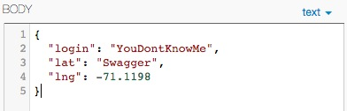
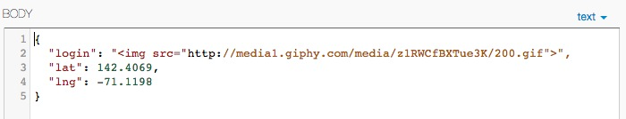
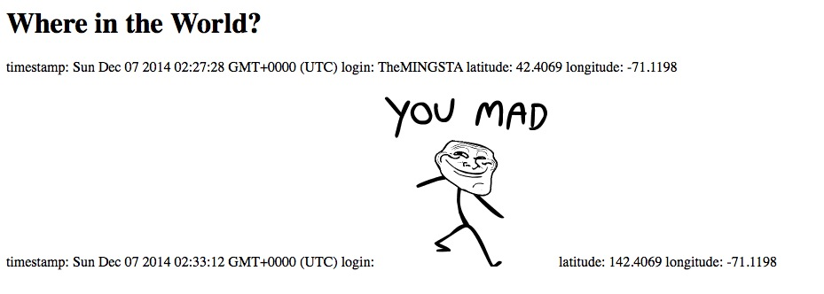

Improper JSON Formatting of Response Messages - Priority: Low
- Affects POST API
- The main risk here would be to an application that relies on the WhereInTheWorld API. If the application doesn't very carefully handle the response a POST request, it will most likely get this malformed response back, expect it to be JSON (as expressed in its header), handle it as such, and then crash. Priority here is listed as low because it doesn't pose any immediate threat to the WhereInTheWorld site itself.
- A POST body of

resulted in:

- The fix is quite trivial: the method used to send the response out should be changed from response.send to response.json("Error Message Here"), which will automatically enclose the string in a JSON object and make the response valid.
Cross-Site-Scripting/NoSQL Injection: - Priority: High
- Affects POST API
- Injection of Cross-Site-Scripts is a classic issue that has plagued databases since the beginning of time, and it comes through in classic fashion here. The user's input in the username field has not been escaped at all, which gives a nefarious user the ability to inject the database with HTML tags including images, videos, or even dangerous scripts. The raw content gets outputted straight to the screen as HTML when the '/' directory is accessed, as can be seen in the screenshots. Priority here is High because Cross-Side-Scripting can have crippling effects on a website, making it inoperable, install malware on users' computer, or a vessel for phishing.
- A POST body of

resulted in:
 - The fix here is more involved. On the POST API itself, the input for the username field is sanitized: it is reasonable to assume that usernames should be strictly alphanumeric, so any POSTs containing non-alphanumeric usernames should possibly be rejected outright. A quick and dirty solution would match against the whitelisted regex expression /^[0-9a-z]+$/, using a function that looks like
if (!username.match(/^[0-9a-z]+$/)) { //reject input }. However, we'd rather not ignore our international friends by assuming that all characters are ASCII, so perhaps it'd be better to avoid reinventing the wheel and instead use one of the great Node.JS packages for input validating and sanitization, such as the aptly-titledexpress-validator, and implement its validation and sanitization methods as part of the route that handles POST requests. Ideally, this same validation and sanitization would be done once the data is fetched from the database, to try to ensure that even if a piece of corrupt data ended up in the database, the website would not be compromised.
Non-Numerical Location Data Enters into Database as null value - Priority: Low
- Affects POST API
- The data entered into the POST API is validated to make sure the numbers passed in the lat and lng fields are actually floats, except if that validation fails, an object is still inserted into the database containing null values for any fields that don't pass validation.
- A POST body of
resulted in the following entry:

- This was fixed by wrapping the database insertion step of the POST route in an
if (passedValidation)statement, where passedValidation is a boolean that becomes false if any of the validation conditions that were being checked for are violated. The priority here is low because the main risk is to the database if it gets filled with bad entries, and to any users of WhereInTheWorld that may not be able to handle entries with unpopulated fields.
Execution of Arbitrary NoSQL Queries - Priority: Medium/High
- Affects GET /locations.json API
- Upon examining the source code, I noticed that the URL-encoded query string passed into the
?login=...parameter is naïvely passed into thefind()call in the database without being validated or sanitized. I realized that this left the door open for queries to be passed into the field, and after several attempts at getting the correct syntax that would let the queries be passed straight through, I succeeded at creating an empty object that contains the query, which is interpreted by MongoDB as running that query on that object, as demonstrated below: - A Post Body of
 resulted in:
resulted in: 
- The fix for this involves validating the input for the username field here as we need for problem #2 - using that same function to validate, we end up with the request being rejected as invalid if it contains the $ that would indicate a MongoDB query. Like issue 2, we could also use an already-made validator library with perhaps fewer limiting effects as these considerations have been taken care of by previous programmers. The priority is listed as ambiguous between medium or high because it depends on the nature of the database - the /locations.json API provides a subset of the data anyway without authorization, this data doesn't seem to need to be protected. However, a clever hacker could use this vulnerability to view the entire contents of the collection whether or not it had a username parameter, so if the database was holding sensitive information, it would be exposed.